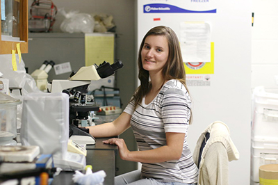

people
Principle Investigator:
Zhengchang Liu, Ph.D.
Current Lab Members:
Graduate Students
Lab "Helper"
Ben

Past lab members:
Graduate Students:
Tammy Pracheil (Ph.D. Program in Chemistry), Senior Biosafety Officer at Tulane University

Patricia Peterson (PhD in Integrative Biology), Postdoc at Duke University
Manika Bhondeley (PhD in Integrative Biology), Scientist, Resilience
Amita Bhattarai (M.S. Program in Biotechnology)
Morgan Collins (M.S. Program in Biotechnology)
Denise Capps (M.S. Program in Biotechnology)
Mengying Chiang (M.S. Program in Biotechnology)
Research Technician:
Melissa Overstreet
Undergraduate Students:
Senior Honors Thesis Research:
Arielle Hunter (high school teacher)
Chad Bush (MD)
Muhammad Farooq (MD/PhD program)
Undergraduate Research:
Natasha Bourgeois (Currently a PhD student at The University of Washington, Seattle)
Fadi Abdallah
Tracey Adams
Hannah Hegwood
Priya Patel
Tahani Abdallah
Jessica Tran
Lynda Ngo
Ricky Bui (MD student)
Kiana Fahimipour
Genevieve Delaney Perret
Gabriela Rocio Ordoyne
Yasmine Rashad
Lauren Balaz
Cody Gulizo
Sean Ford
Adrienne McGinn (Postdoctoral Fellow at NIH)
Kelley Narvaez
Ashlie LeBlanc
Brennen Poplus
Richard Schroeder
Rachel Fenasci
Jasmin Peter
Mayra Franco
Glenda Castellanos
Calvin Buchon
Heather Valdivia
Stephanie Perez
Joshua Black (Currently a PhD student at The University of Texas, Austin)
Ryan Hanson
Gregory Schwing
Michael Ganucheau
Alexander vogel
Thao Nguyen
Rui Silva (Currently a PhD student at The University of Texas, Austin)
High school students:
Cera Aex
Allison Pham
Amaris Lewis (Stanford University)
Michaela LeDoux (Dartmouth College)
Allie Baldassaro (PhD student at Wake Forest University)
Emily Snyder
Anna Stebbins
High school teachers:
Tracy Bourgeois
Visiting scholars:
Dr. Chen Zhang
Sergio Giannattasio, Senior Scientist